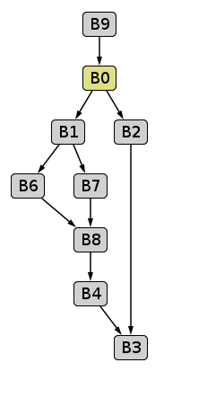
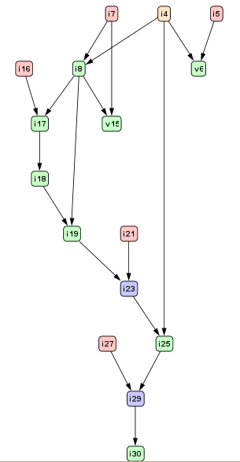
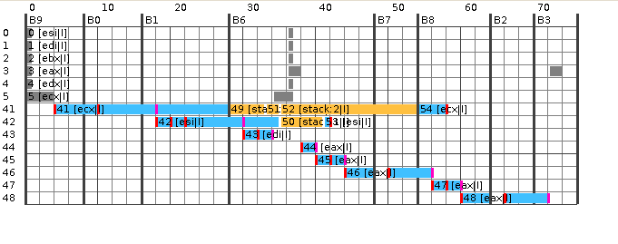

sample code factIf¶
入力ソースコードfactIf
public static int factIf(int n) {
int p;
if (n > 1) {
p = n * factIf(n - 1);
} else {
p = 1;
}
return p;
}
factIf Bytecode
public static int factIf(int):
Code:
0: iload_0
1: iconst_1
2: if_icmple 17
5: iload_0
6: iload_0
7: iconst_1
8: isub
9: invokestatic #3; //Method factIf:(I)I
12: imul
13: istore_1
14: goto 19
17: iconst_1
18: istore_1
19: iload_1
20: ireturn
factIf HIR:
static jint Fact.factIf(jint)
B9:
i4 = method parameter
v32 = std entry B0
B0:
i5 = 1
v6 = if i4 <= i5 then B2 else B1
B1:
i7 = 1
i8 = i4 - i7
v15 = if i8 <= i7 then B7 else B6
B7:
i21 = 1
v22 = goto B8
B6:
i16 = 1
i17 = i8 - i16
i18 = invokestatic(i17) Fact.factIf(I)I
i19 = i8 * i18
v20 = goto B8
B8:
i23 = [i19,i21]
v24 = goto B4
B4:
i25 = i4 * i23
v26 = goto B3
B2:
i27 = 1
v28 = goto B3
B3:
i29 = [i25,i27]
i30 = ireturn i29
factIf HIR CFG
factIf HIR DFG
factIf Optimized HIR
static jint Fact.factIf(jint)
B9:
i4 = method parameter
v32 = std entry B0
B0:
i5 = 1
v6 = if i4 <= i5 then B2 else B1
B1:
// deleted i7 = 1
i8 = i4 - i7
v15 = if i8 <= i7 then B7 else B6
B7:
// deleted i21 = 1
v22 = goto B8
B6:
// deleted i16 = 1
i17 = i8 - i5 // replaced i17 = i8 - i16
i18 = invokestatic(i17) Fact.factIf(I)I
i19 = i8 * i18
v20 = goto B8
B8:
i23 = [i19,i5] // replaced i23 = [i19,i21]
// deleted v24 = goto B4
// deleted B4:
i25 = i4 * i23
v26 = goto B3
B2:
// deleted i27 = 1
v28 = goto B3
B3:
i29 = [i25,i5] // replaced i29 = [i25,i27]
i30 = ireturn i29
基本的には、HIRからLIRへシーケンシャルに変換する BBの入り口処理とかは遣るけどさ
factIf translate HIR to LIR
# # # #
label B9
std_entry
move ecx R41
branch AL B0
label B0
cmp R41 1
branch LE B2
branch AL B1
label B1
move R41 R42
sub R42 1 R42
cmp R42 1
branch LE B7
branch AL B6
label B6
move R42 R43
sub R43 1 R43
move R43 ecx
static call [static jint Fact.factIf(jint)] result eax bci:9
move eax R44
move R44 R45
mul R45 R42 R45
move R45 R46
branch AL B8
label B7
move 1 R46
branch AL B8
label B8
move R46 R47
mul R47 R41
move R47 R48
branch AL B3
label B2
move 1 B48
branch AL B3
label B3
move R48 eax
return eax
![digraph factIf {
B9 [shape = box, label = "B9:\l std_entry\l move ecx R41\l branch AL B0\l "];
B9 -> B0;
B0 [shape = box, label = "B0:\l cmp R41 1\l branch LE B2\l branch AL B1\l "];
B0 -> B2;
B0 -> B1;
B1 [shape = box, label = "B1:\l move R41 R42\l sub R42 1 R42\l cmp R42 1\l branch LE B7\l branch AL B6\l "];
B1 -> B7;
B1 -> B6;
B6 [shape = box, label = "B6:\l move R42 R43\l sub R43 1 R43\l move R43 ecx\l static call [static jint Fact.factIf(jint)] result eax bci:9\l move eax R44\l move R44 R45\l mul R45 R42 R45\l move R45 R46\l branch AL B8\l "];
B6 -> B8;
B7 [shape = box, label= "B7:\l move 1 R46\l branch AL B8\l "];
B7 -> B8;
B8 [shape = box, label = "B8:\l move R46 R47\l mul R47 R41\l move R47 R48\l branch AL B3\l "];
B8 -> B3;
B2 [shape = box, label = "B2:\l move 1 B48\l branch AL B3\l "];
B2 -> B3;
B3 [shape = box, label = "B3:\l move R48 eax\l return eax\l "];
}](../images/graphviz-768311589508fe453531870483c7fff8cba0a913.png)
LinearScanレジスタ割り付け
LIRでも色々冗長な命令を削る
Before Code Generation
# # # # #
label B9
std_entry
// deleted move ecx R41
// deleted branch AL B0
label B0
cmp ecx 1 // replaced cmp R41 1
branch LE B2
// deleted branch AL B1
label B1
move ecx esi // replaced move R41 R42
sub esi 1 esi // replaced sub R42 1 R42
cmp esi 1 // replaced cmp R42 1
move ecx stack:2 // add
branch LE B7
// deleted branch AL B6
label B6
move esi edi // replaced move R42 R43
sub edi 1 edi // replaced sub R43 1 R43
move edi ecx // replaced move R43 ecx
move esi stack:1 // add
static call [static jint Fact.factIf(jint)] result eax bci:9
move stack:1 esi // add
// deleted move eax R44
// deleted move R44 R45
mul eax esi eax // replaced mul R45 R42 R45
// deleted move R45 R46
branch AL B8
label B7
move 1 eax // replaced move 1 R46
// deleted branch AL B8
label B8
move stack:2 ecx // add
// deleted move R46 R47
mul eax ecx eax // replaced mul R47 R41
// deleted move R47 R48
// deleted branch AL B3
return eax // add
label B2
move 1 eax // replaced move 1 B48
// deleted branch AL B3
label B3
// deleted move R48 eax
return eax